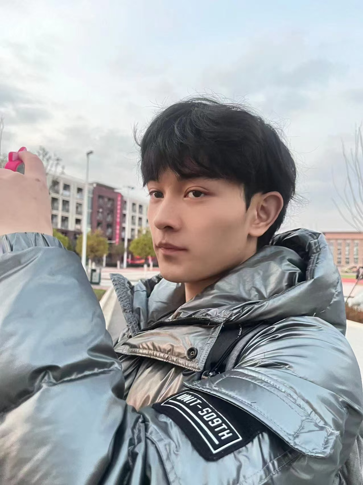
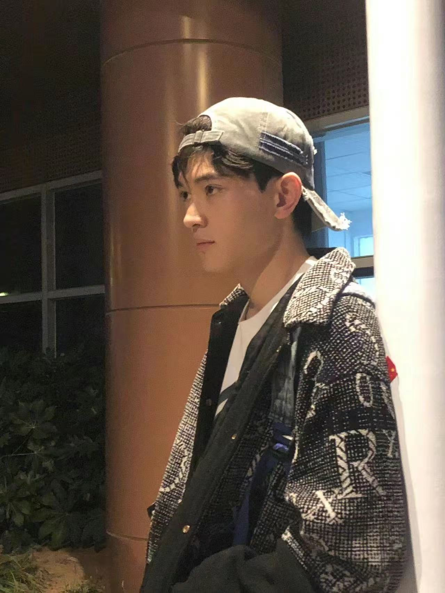

Digital Craftsman
在噪声中寻找信号 在代码中构建永恒 FIND SIGNAL IN NOISE BUILD ETERNITY IN CODE
我是亮哥。这是一场关于技术探索、独立思考与数字艺术的策展，记录那些试图超越平庸的瞬间。 I'm Liang Ge. A curation of technical exploration, independent thinking, and digital art, documenting the moments that push beyond mediocrity.
Authenticated
ID
#LG-ARCHIVE-099
LIANG_GE.dev
Role
Project Architect
Location
Shenzhen, CN
Status
Operational
Core
System Logic
"The intersection of code and craft is where the most meaningful signals emerge."
精选馆藏 / Selected Archives
precision_manufacturing
Open
Source
React
MATRIX TIME
DASHBOARD
重新定义的数字看板。结合番茄钟与艾森豪威尔矩阵的多维效能工具，旨在将混沌转化为秩序。


Visual Journal
光影记录
Shenzhen / 2024
Reading Now
存在与虚无
Sartre
65% Complete
terminal
System Operational
"构建不仅仅是代码的堆砌，而是逻辑与审美的终极妥协。"
Uptime: 102kh 12m
VER: 1.0.42_STABLE